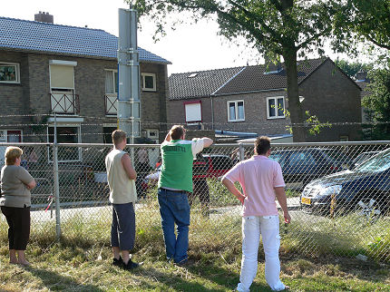
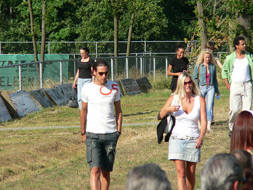

|
SV
Brunssum - Roda JC (0-7) 8 juli 2006
|
De spelers treden aan voor de warming-up in de eerste oefenwedstrijd van
het nieuwe seizoen. tegenstander is vierdeklasser SV Brunssum.

Beginopstelling:Castro, Saeijs, De Fauw, Voigt, De Jong, Meeuwis,
Agustien, Bodor, Vandamme, Oper, Cissé. Opvallend was dat Vandamme
de naam Jamaïque als shirt-naam droeg.

De meeste opwinding was aanvankelijk buiten het veld waar een opstootje
plaatshad.
Langs de lijn bleef het gewoon gezellig tijdens deze zomeravondpot.
Het nieuwe shirt. Beaphar is iets kleiner en op de achterzijde staat op
schouderhoogte de sponsornaam Aevitae.

Mr. and mrs. Vicelich kwamen ook kijken.
Het was heet.
Erg heet.
Ruststand 0-4.
Het meisje rechts heeft (nog) geen seizoenskaart....
Izz en S.O.I.A. doen een wedstrijdje meeste tattoo's. Het gaat voorlopig
aardig gelijk op. Inmiddels is de tweede helft begonnen en staat er een
compleet gewijzigd elftal bij Roda: Kujovic, Rudge, Kah,
Rompelberg,
Lachambre, Leemans, Bouchiba, Bejas, Sonko, Cristiano,
Van Tornhout.
Brunssum stelde drie maal een andere keeper op!
Nog lekker onbekommerd.
De tweede helft is nauwelijks boeiend. Het wordt 0-7.
Doelpunten: Saeijs, Cissé (2), Bodor, Van Tornhout (2), Cristiano.
Mark S. wil wel een beschuitje eten met....
... de vriendin van Agustien, (de linkse dus).
© Koempels Pleasure Dome
|